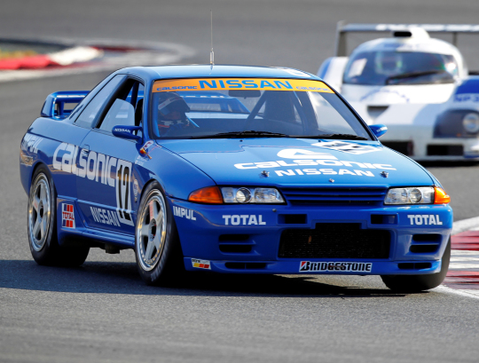
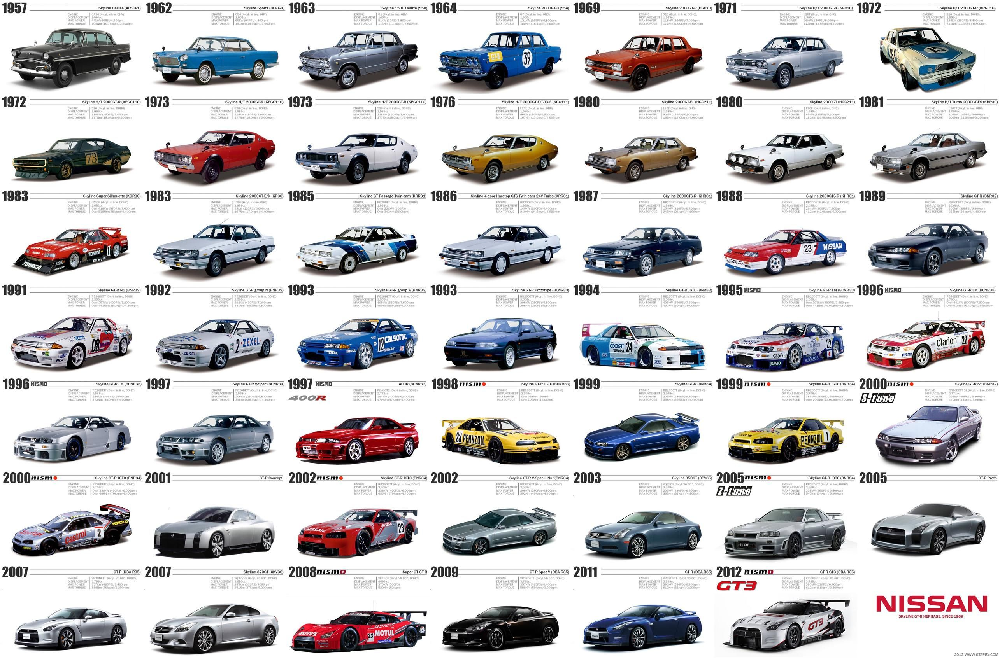

De Nissan skyline is de meest populaire JDM auto samen met de '96 Toyata supra van de wereld. De auto is heel erg geliefd onder de auto enthusiasten vanwege het feit dat de motor heel stevig is om hard door te tunen naar bijvoorbeeld 1000pk. De r34 skyline had ook een supersnelle 0-100 km/h tijd van 4,9 sec, dat was heel snel voor zijn tijd. Als je hem door zou tunen dan zou je onder de 3 sec kunnen komen.
Op deze website ga ik nog meer vertellen over alle modellen, de geschiedenis, hoe goed de skyline was in races en wat meer over de technische kant van de skyline.
